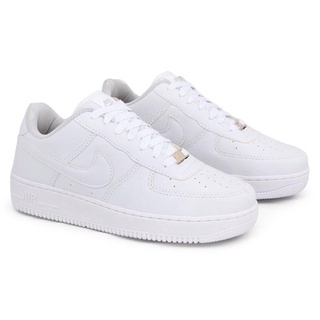
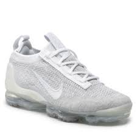

HISTÓRIA DA NIKE
Quem fundou a Nike?
A Nike foi fundada em 1971 pela dupla de empresários Bill Bowerman e Phil Knight em Beaverton, nos Estados Unidos. Bowerman nasceu em 1911 em Portland, EUA, e seguiu carreira militar entre 1942 e 1945 e depois foi treinador do time de atletismo da Universidade de Oregon. Knight nasceu em 1938, também em Portland, e foi estudar negócios na Universidade de Oregon, onde entrou para uma fraternidade esportiva e foi treinado por Bill Bowerman.
A primeira empresa da dupla foi a Blue Ribbon Sports (BRS), criada em janeiro de 1964 e funcionava como revendedora da Onitsuka Tiger, uma marca de calçados japonesa. As vendas foram boas e o esquema durou até 1971, quando a Tiger processou a BSR por vender seus produtos sob o nome de “Nike” após a empresa lançar uma versão adaptada, mais macia e almofadada. A partir da separação das empresas então começa a linha própria de calçados da marca “Nike”.
Origem do nome "Nike"
O nome “Nike” substituiu a Blue Ribbon Sports quando a empresa seguiu solo, sem ser revendedora de outra marca. Niké é uma deusa da mitologia grega que representa força, velocidade e vitória. Os romanos também referem a mesma deusa como “Vitória”.
A deusa Niké é representada pela imagem de uma mulher alada, que inspirou o design icônico da logo chamado de “The Swoosh”. A logo foi desenhada por Carolyn
Davidson, uma designer gráfica na época estudante da Universidade Estadual de Portland, que cobrou $35 dólares pelo serviço. O Swoosh foi registrado em 1974 e, atualmente, a empresa assina a marca apenas com a logo em diversos produtos e lojas.
Expansão mundial da Nike
A Nike começou a se expandir ao redor do mundo nos anos 80, quando começou a operar na Europa e na América do Sul. As estratégias de expansão iam em conjunto aos planos de marketing e novas campanhas e desenvolvimento de produtos da marca. Em 1978 a Nike se tornou “Nike,Inc.” e começou a produzir roupas esportivas. Na mesma época a empresa começou a comprar outras marcas, sendo elas a Cole Haan, calçados e acessórios; Bauer Hockey, equipamentos para prática de hockey e skate; Hurley, acessórios para natação e surf; e, por fim, a Converse, grande empresa de calçados é umae uma das principais aquisições da Nike, Inc. A marca já era considerada a maior empresa de calçados e acessórios esportivos dos Estados Unidos em 1989.
No Brasil a empresa chegou em 1988, junto da campanha “Just do it!” que se tornou o slogan da marca, entretanto funcionou com lojas multimarcas por 20 anos, até abrir a primeira loja oficial da marca em solo brasileiro em 2008.
Slogan “Just do it!”
Uma das campanhas mais bem sucedidas da Nike foi a criação do slogan “Just do it!”, criada em 1988 por Dan Wieden, fundador da agência de publicidade contratada pela Nike, Wieden+Kennedy. A campanha foi considerada entre as 5 melhores campanhas do século 20 e a frase tornou- se o slogan oficial, sendo inclusive registrado como parte da marca.
Inovação e qualidade dos produtos
O principal fator para o sucesso da Nike é a inovação e desenvolvimento de produtos exclusivos, diferenciados e de alta qualidade. A marca teve seu primeiro destaque com o tênis aprimorado da Onitsuka Tiger, chamado de Tiger Cortez. O solado do modelo Waffle Trainer em formato de waffle que foi muito bem recebido pelo público.
Um elemento que catapultou a marca para um público ainda maior e auxiliou a conquistar o status de marca foi as parcerias com celebridades. A peça mais icônica foi a parceria com o ex-atleta Michael Jordan, chamada de Air Jordan. A colaboração começou em 1984 e já desenvolveram diversas versões e modelos que são um dos principais produtos da marca atualmente. Em 2018 apenas os modelos Jordan lucraram $2,8 bilhões de dólares para a Nike. O Air Jordan virou queridinho de colecionadores e vem se tornando um sneaker de luxo, com as colorways (a paleta de cores de um tênis) diferentes e as edições especiais. Um par do Air Jordan usado por Michael Jordan em 1984 foi vendido em Las Vegas por $1,47 milhões de dólares em 2021 e se tornou o Air Jordan mais caro do mundo.
Outros atletas que assinaram com a marca, seja para campanhas ou desenvolver edições especiais foram: Tiger Woods; Lebron James; e Kobe Bryant.
A tecnologia Air desenvolvida em 1988 também foi uma grande inovação da marca. Proporcionando maior absorção dos impactos e estilizando os tênis deixando os detalhes à mostra, a tecnologia Air revolucionou o conforto para atletas, principalmente corredores.
Nike atualmente
A Nike se tornou a maior empresa de artigos esportivos do mundo e conseguiu algumas conquistas importantes nessa trajetória. Atualmente a empresa possui contrato de exclusividade com a NBA e a NFL para fornecer aparelhos para as ligas esportivas. A marca também se faz presente nas Olimpíadas desde 1960 e sempre patrocina grandes seleções.
A empresa vale atualmente mais de $100 bilhões de dólares e emprega mais de 73 mil pessoas.
Curiosidades
O primeiro tênis feito por Bowerman foi para o atleta Otis Davis, que diz ter sido presenteado pelo treinador por não ter o tênis que encaixasse para a atividade. Davis relata que o tênis não tinha muito suporte para a prática de exercícios e sequer era tão confortável.
Outro fato interessante é que o par de tênis mais caro do mundo é o Nike Moon Shoes, desenhado por Bill Bowerman. O tênis foi feito em uma máquina de waffle, logo quando Bowerman inventou o modelo waffle que se tornou uma grande inovação no mercado. O par foi vendido por $417.500 milhões de dólares em 2019.
TÊNIS MAIS VENDIDOS
1º Nike Air Force 1 Low.

2º Nike Air Max 270.

3º Nike Air Vapormax Plus
sss
REFERÊNCIA IMAGENS
Imagem da Nike
https://www.google.com/url?sa=i&url=https%3A%2F%2Fpt.m.wikipedia.org%2Fwiki%2FFicheiro%3ALogo_nike_principal.jpg&psig=AOvVaw07htButdx5x4sYN-N6fiPW&ust=1666782731594000&source=images&cd=vfe&ved=0CAoQjRxqFwoTCMDjvuGf-_oCFQAAAAAdAAAAABAO
Air Force
https://www.google.com/url?sa=i&url=https%3A%2F%2Fshopee.com.br%2FTenis-Air-Force-Feminino-Masculino-Branco-em-Super-Promo%25C3%25A7%25C3%25A3o-Envio-Imediato.-i.504832680.16638755533&psig=AOvVaw2wNUdYRusZfhboEgcQrdJN&ust=1666782883411000&source=images&cd=vfe&ved=0CAoQjRxqFwoTCLj2wZ-g-_oCFQAAAAAdAAAAABAE
Air Max 270
https://www.google.com/url?sa=i&url=https%3A%2F%2Fdroptenis.com.br%2Fproduto%2Ftenis-nike-air-max-270%2F&psig=AOvVaw0YgWnItyrqJ-bdGNSoHUZd&ust=1666782948159000&source=images&cd=vfe&ved=0CAoQjRxqFwoTCNC-4sOg-_oCFQAAAAAdAAAAABAI
Vapormax Plus
https://www.google.com/url?sa=i&url=https%3A%2F%2Fwww.portsdebalears.com%2Fes%2Fcffdjsshop%2Fc%2Fsport%2Fcolectia%3Anike_vapormax&psig=AOvVaw0-ntt5zE0nrYZuAv9GI_04&ust=1667655585715000&source=images&cd=vfe&ved=0CAoQjRxqFwoTCJjKxarTlPsCFQAAAAAdAAAAABAD